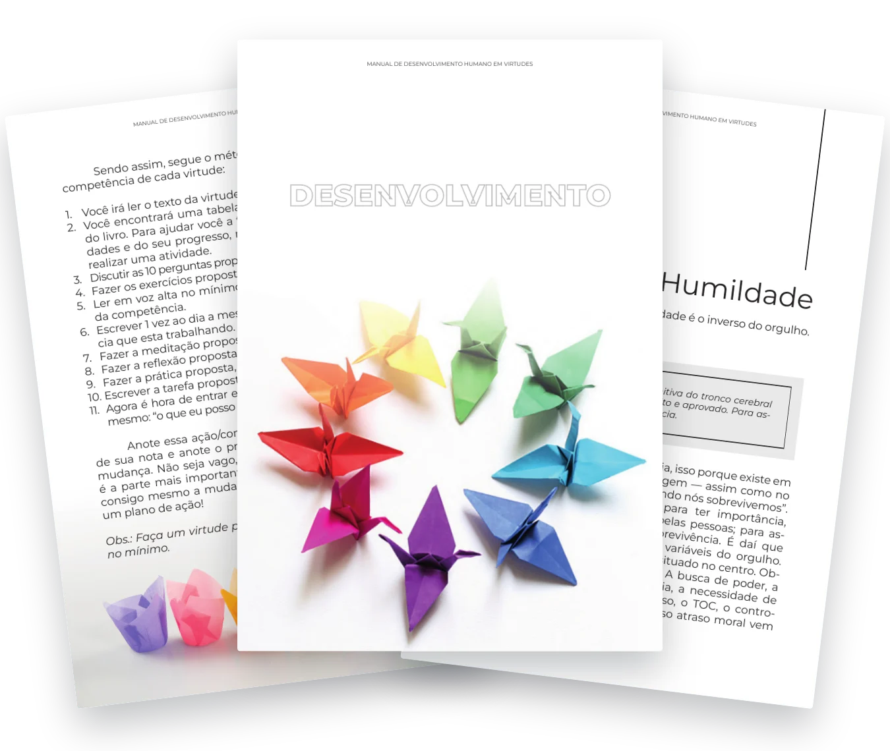

Material do curso Fundamentos da Virtologia
Exercícios de neuroplasticidade das 8 virtudes iniciais
As 8 virtudes da base da pirâmide, com o método completo para praticar cada uma no seu dia a dia.

- O método para desenvolver a competência de cada virtude, em 11 passos.
- No mínimo 14 dias de prática para cada virtude, uma de cada vez.
- Afirmações, meditações, reflexões, exercícios e a tabela para acompanhar o seu progresso.
As 8 virtudes do caderno
- Humildade
- Individuação
- Perdão
- Aceitação
- Perseverança
- Fé
- Abnegação
- Responsabilidade
Faça download dos exercícios de neuroplasticidade das 8 virtudes iniciais
Preencha e baixe o PDF na hora.
Formação em Virtologia
Quer ir além dos exercícios?
Na Formação em Virtologia você aprende a fundo como o ser humano funciona e como transformá-lo psicológica e neurologicamente, com o Dr. Eduardo Casarotto.
- 60 horasde aulas 100% online, para assistir no seu tempo
- Aula mensalao vivo com o Dr. Eduardo Casarotto
- Tira-dúvidassemanal em grupo, com especialistas da equipe
- Grupos de estudocriados pelos alunos mais experientes
Depoimentos
Relatos de quem aplica a Virtologia
Profissionais e alunos contam o que mudou nos atendimentos e na própria vida.